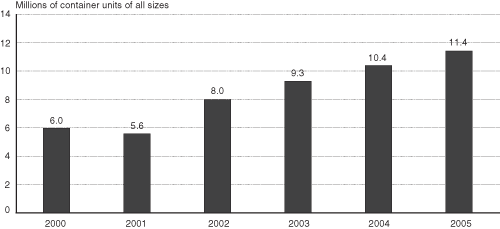

Excel | CSV | Table Version
SOURCE: U.S. Department of Transportation, Research and Innovative Technology Administration, Bureau of Transportation Statistics, based on data from U.S. Department of Homeland Security, Customs and Border Protection, Mission Support Services, Operations Management Database CD, various years.